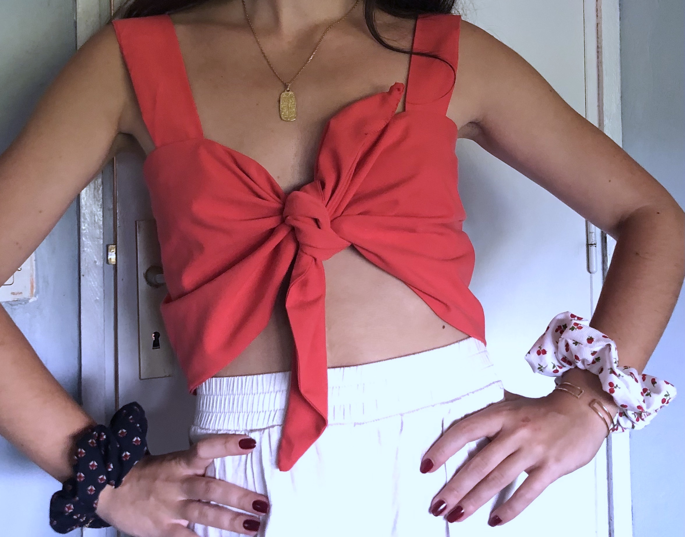

🌼 Victoria Mignon 🌼 | Bienvenue sur ma page de présentation

Bonjour, je m'appelle Victoria Mignon !
Je suis diplômée d'un Master Programme Grande Ecole à Audencia avec une spécialisation digitale. Passionnée par la mode durable, je m'intéresse au luxe et à la couture. Je passe également beaucoup de temps à lire et à pratiquer les arts plastiques (en particulier la photographie et le dessin). J'habite à Paris mais je suis souvent à Meauce où mon but est de promouvoir l'environnement et le patrimoine auprès des jeunes, notamment grâce à ma maîtrise des outils digitaux. 🌱
🧵 Mode 🧵
Passionnée par la mode et sensible à l'environnement, je suis particulièrement intéressée par la mode durable. Evidemement, je m'intéresse beaucoup au mode du luxe qui est une alternative plus durable de la mode. Mais, aussi, depuis 2021, je me suis lancée dans la couture. En effet, j'ai produit une quinzaine de vêtements et accessoires. Je suis autodidacte, et réalise moi-même les étapes suivantes: conception du patron, choix du tissus, découpe et assemblage des pièces, personnalisation (broderie,etc). Si possible, j'essaye de produire mes pièces à partir de tissus upcyclés (provenant de nappes, draps ou vieux vêtements usés).
Mes dernières création :
- Brodé à la main -

- Tissus upcyclés -

🰠Meauce ğŸ°
Le château de Meauce est l'un des plus vieux château du nivernais. Situé au bords de l'Allier, un site naturel classé, il héberge de nombreuses especes protégées. En plus de son histoire et de son environnement onirique, le château de Meauce se distingue par sa forme ronde unique.
Je suis également bénévole pour le château depuis 2016, et depuis plus récemment je traville pour sa société d'exploitatiLn d'hébergement haut de gamme. Sensible à la protection de l'environnement, c'est grâce à ces expériences que je me suis engagée davantage (organisation d'évènement avec la LPO).
📷 Photographie 📷
Très créative, j'adore m'exprimer grâce à l'art et en particulier la photographie. Cette passion est très utile dans le secteur du digital, et j'ai du pu l'intégrer dans plusieurs de mes projets. Ce que je préfère c'est immortaliser la nature et l'architecture environnante. Ci-dessous quelques exemples de clichés que j'ai pris à Cuba.


📖 Lecture 📖
J'aime beaucoup lire et découvrir de nouveaux romans depuis toujours. J'apprécie des styles très différents tels que les romans historiques (Les Piliers de la Terre, Les rois maudits, La pierre de vie), autobiographiques (La Promesse de l'aube) ou même de fiction (La petite fille de Monsieur Linh, La Tresse).
Mes dernières lectures :
et d'un tome final
- De Katherine Pancol -

- D'Elena Ferrante -

💻 Digital 💻
Enfin, le digital est aussi très important pour moi. En effet, tout au long de mon cursus j'ai appris à maîtriser de nombreux outils qui me permettent de mesurer, d'analyser, et de créer. Parmis ces nombreux outils, j'ai notamment découvert le langage HTML/CSS ce qui m'a permis de créer le code de cette page. J'ai aussi découvert l'outil Figma qui permet de créer des prototypes d'interface, très utile pour la conception d'un parcours client. Lors de mon échange à Nova Business School à lisbonne, j'ai décidé de présenter un de mes projets grâce à Figma. L'objectif était d'expliquer ce qu'était le design pour nous de manière innovante. J'ai donc designer une application afin d'y répondre. Finalement, le numérique est donc, pour moi, un outil supplémentaire pour mettre en avant ma créativité.